Skip to main content
Renaissance Skin
☰
×
About
News
Events
Themes
Publications
Visible Skin
Gallery
Map
About
Bibliography
Search
Visible Skin
Gallery
Map
About
Bibliography
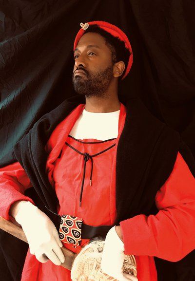 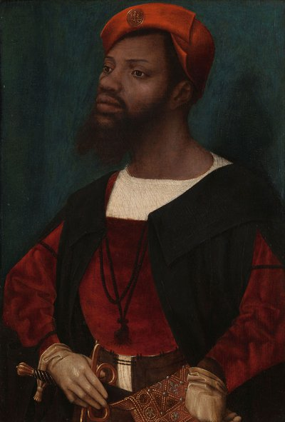
01
Portrait of an African Man
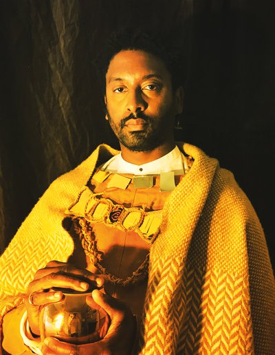 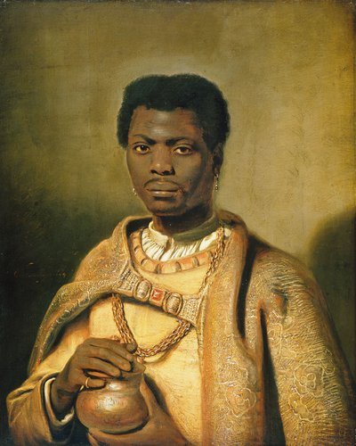
02
The African King Caspar
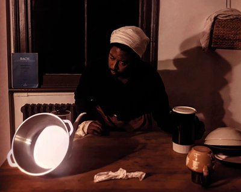 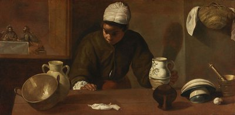
03
Kitchen Maid with the Supper at Emmaus
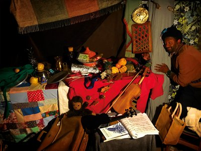 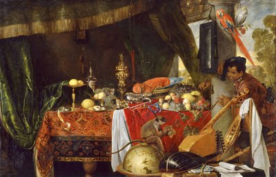
04
Still Life with Moor and Parrot
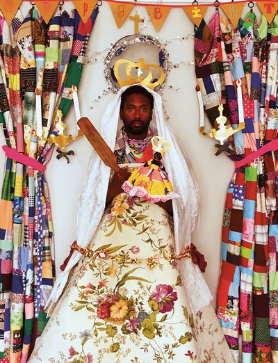 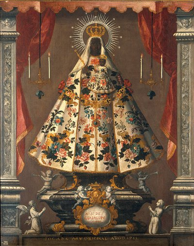
05
The Virgin of Guadalupe
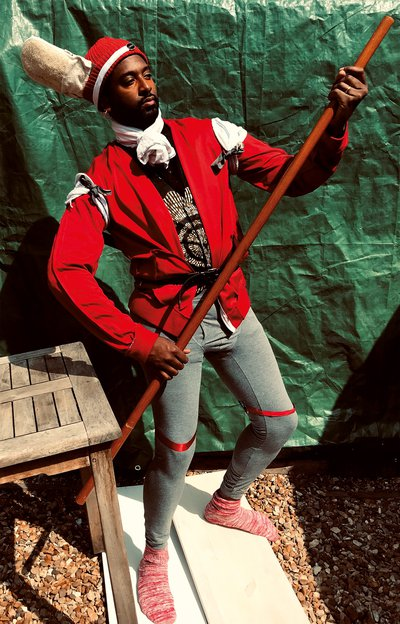 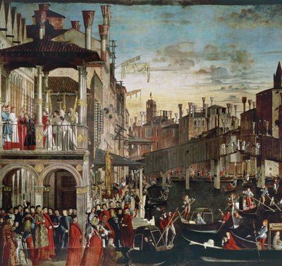
06
The Gondolier
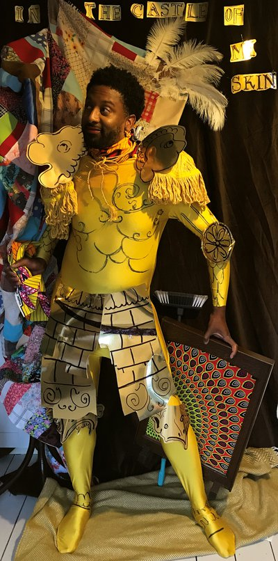 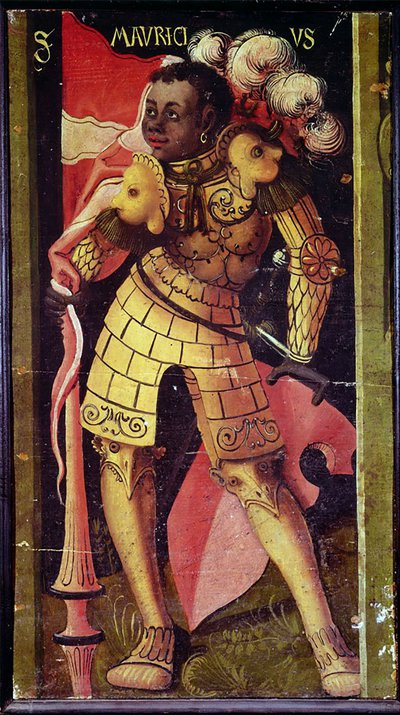
07
St Maurice
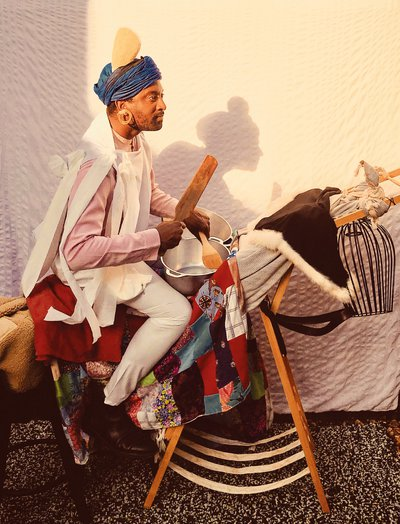 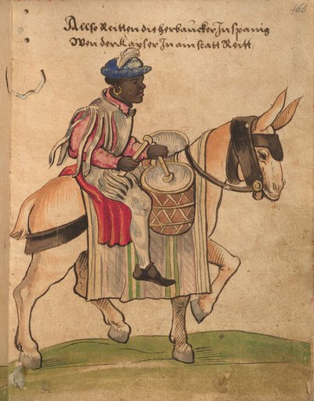
08
An African Drummer
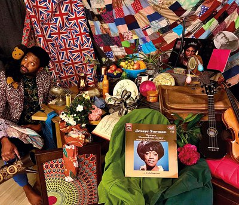 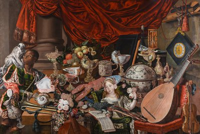
09
The Paston Treasure
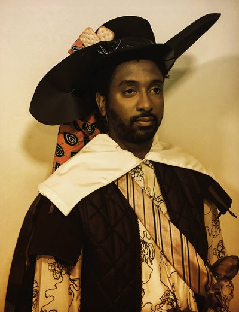 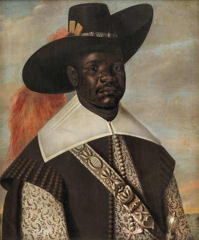
10
Portrait of Don Miguel de Castro
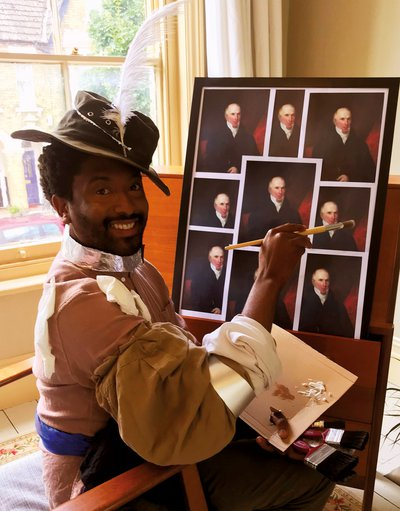 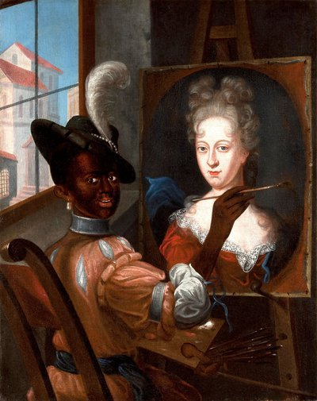
11
Black Artist Completing a Portrait
Audio Clips
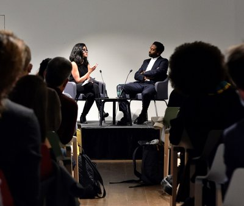
Launch Event